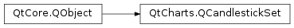

QtCharts.QCandlestickSet¶
Note
This class was introduced in Qt 5.7.
Synopsis¶
Functions¶
Signals¶
- def
brushChanged() - def
clicked() - def
closeChanged() - def
doubleClicked() - def
highChanged() - def
hovered(status) - def
lowChanged() - def
openChanged() - def
penChanged() - def
pressed() - def
released() - def
timestampChanged()
Detailed Description¶
-
class
PySide2.QtCharts.QtCharts.QCandlestickSet(open, high, low, close[, timestamp=0.0[, parent=nullptr]])¶ -
class
PySide2.QtCharts.QtCharts.QCandlestickSet([timestamp=0.0[, parent=nullptr]]) Parameters: - open –
PySide2.QtCore.qreal - high –
PySide2.QtCore.qreal - low –
PySide2.QtCore.qreal - close –
PySide2.QtCore.qreal - timestamp –
PySide2.QtCore.qreal - parent –
PySide2.QtCore.QObject
- open –
-
PySide2.QtCharts.QtCharts.QCandlestickSet.brush()¶ Return type: PySide2.QtGui.QBrush
-
PySide2.QtCharts.QtCharts.QCandlestickSet.brushChanged()¶
-
PySide2.QtCharts.QtCharts.QCandlestickSet.clicked()¶
-
PySide2.QtCharts.QtCharts.QCandlestickSet.close()¶ Return type: PySide2.QtCore.qreal
-
PySide2.QtCharts.QtCharts.QCandlestickSet.closeChanged()¶
-
PySide2.QtCharts.QtCharts.QCandlestickSet.doubleClicked()¶
-
PySide2.QtCharts.QtCharts.QCandlestickSet.high()¶ Return type: PySide2.QtCore.qreal
-
PySide2.QtCharts.QtCharts.QCandlestickSet.highChanged()¶
-
PySide2.QtCharts.QtCharts.QCandlestickSet.hovered(status)¶ Parameters: status – PySide2.QtCore.bool
-
PySide2.QtCharts.QtCharts.QCandlestickSet.low()¶ Return type: PySide2.QtCore.qreal
-
PySide2.QtCharts.QtCharts.QCandlestickSet.lowChanged()¶
-
PySide2.QtCharts.QtCharts.QCandlestickSet.open()¶ Return type: PySide2.QtCore.qreal
-
PySide2.QtCharts.QtCharts.QCandlestickSet.openChanged()¶
-
PySide2.QtCharts.QtCharts.QCandlestickSet.pen()¶ Return type: PySide2.QtGui.QPen
-
PySide2.QtCharts.QtCharts.QCandlestickSet.penChanged()¶
-
PySide2.QtCharts.QtCharts.QCandlestickSet.pressed()¶
-
PySide2.QtCharts.QtCharts.QCandlestickSet.released()¶
-
PySide2.QtCharts.QtCharts.QCandlestickSet.setBrush(brush)¶ Parameters: brush – PySide2.QtGui.QBrush
-
PySide2.QtCharts.QtCharts.QCandlestickSet.setClose(close)¶ Parameters: close – PySide2.QtCore.qreal
-
PySide2.QtCharts.QtCharts.QCandlestickSet.setHigh(high)¶ Parameters: high – PySide2.QtCore.qreal
-
PySide2.QtCharts.QtCharts.QCandlestickSet.setLow(low)¶ Parameters: low – PySide2.QtCore.qreal
-
PySide2.QtCharts.QtCharts.QCandlestickSet.setOpen(open)¶ Parameters: open – PySide2.QtCore.qreal
-
PySide2.QtCharts.QtCharts.QCandlestickSet.setPen(pen)¶ Parameters: pen – PySide2.QtGui.QPen
-
PySide2.QtCharts.QtCharts.QCandlestickSet.setTimestamp(timestamp)¶ Parameters: timestamp – PySide2.QtCore.qreal
-
PySide2.QtCharts.QtCharts.QCandlestickSet.timestamp()¶ Return type: PySide2.QtCore.qreal
-
PySide2.QtCharts.QtCharts.QCandlestickSet.timestampChanged()¶
© 2018 The Qt Company Ltd. Documentation contributions included herein are the copyrights of their respective owners. The documentation provided herein is licensed under the terms of the GNU Free Documentation License version 1.3 as published by the Free Software Foundation. Qt and respective logos are trademarks of The Qt Company Ltd. in Finland and/or other countries worldwide. All other trademarks are property of their respective owners.